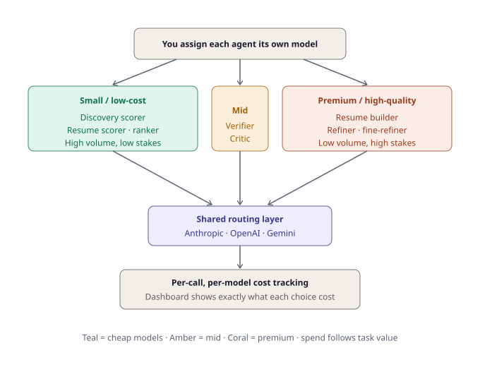
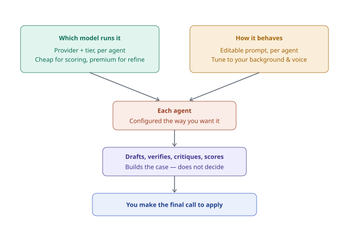
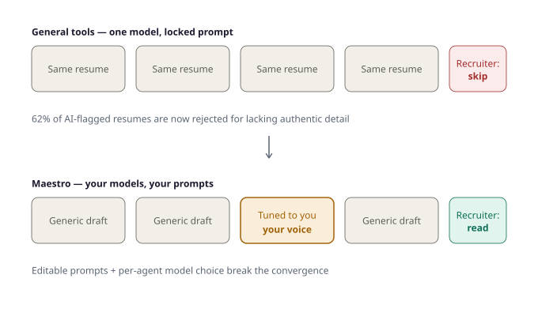
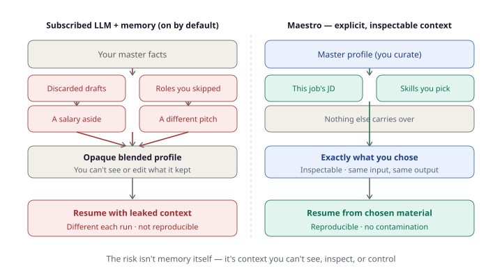

Why Maestro AI?¶
There are plenty of job-search tools. Most fall into a few buckets — and each leaves a real gap. Maestro exists to close them: systematic, transparent, and decided by you, not the machine.
How Maestro compares¶
The honest version — claims about other tools are written the way their own makers would, not strawmanned.
| Capability | Chatbot + agents (ChatGPT, Claude, Gemini) |
Volume auto-apply (LazyApply, Sonara) |
Trackers / autofill (Teal, Simplify, Huntr) |
Resume optimizers (Jobscan, Rezi) |
Maestro AI |
|---|---|---|---|---|---|
| Finds & scores jobs for fit | Partial — web-search if asked, no persistent scoring | Yes, loose filters | No | No | Yes — dual fit scoring (role + background) |
| Tailors résumé per job | Yes, but manual every time | Generic, templated | No | Manual, one at a time | Yes — per-job, from your master profile |
| Generates cover letter | Yes, manual | Basic | No | No | Yes — built + verified |
| Fact-checks for hallucinations | No — it's the source of them | No — "audit it yourself" | N/A | No | Yes — a Verifier agent checks every claim |
| Self-critiques quality | Only if asked, same blind spots | No | No | No | Yes — a Critic agent flags weaknesses |
| Per-agent model choice | No — one model | No — one fixed model | N/A | No | Yes — any provider/model per agent |
| Per-agent prompt control | Prompts, but no pipeline | No — locked black box | N/A | No | Yes — edit + reset to default |
| Controllable memory / source of truth | Opaque, resets between chats | No | Stores form data only | No | Yes — one master dossier you own |
| Cost / quality tuning | No — flat subscription | None | None | None | Yes — cheap to score, premium to refine |
| Tracks applications + cost | No cross-session memory | Basic | Yes | No | Yes — per-call, per-model analytics |
| Runs the full pipeline unattended | No — you drive every step | Yes (auto-applies) | No | No | Yes — discovery → build → refine on a schedule |
| Who makes the final apply decision | You, but no structured evidence | The bot, while you sleep | You (no AI help) | N/A | You — informed, never replaced |
| Account-ban / spam risk | None (manual) | High (spray-and-pray) | None | None | None — you stay in the loop |
| Your data stays yours | No — sent to their servers | No | No | No | Yes — your machine, your API keys |
| Open source / self-hosted | No | No | No | No | Yes |
Every "quality" competitor still tells users to manually check for fabricated skills. Maestro is the only one where checking is a built-in agent.
You choose which model runs each agent¶
Not every step needs a top-tier model. High-volume, low-stakes work (scoring, ranking) can run on cheap models; low-volume, high-stakes work (building, refining) gets premium ones. You assign each agent its own model, and the dashboard shows exactly what every choice cost.

Two axes of control: which model, and how it behaves¶
Per-agent control runs along two independent axes. You pick which model runs each agent (provider and tier), and how it behaves (an editable prompt tuned to your background and voice). Together they configure every agent exactly how you want — and the agents build the case, but never make the apply decision.

The sameness trap¶
When everyone uses similar optimization tools, résumés converge: identical summary statements, the same action verbs, near-identical accomplishment structures, suspiciously clean formatting. Recruiters now report reviewing batches that feel interchangeable — and the sameness itself has become the tell. A résumé that reads too perfectly is a red flag.
This is no longer just unhelpful; it's actively penalized. Industry reporting in 2026 indicates a large majority of employers now screen for AI-generated résumé content, and a majority of those reject résumés that lack authentic, personal detail.4
General tools run one model with one locked prompt, so everyone's output converges on the same shape — which is exactly what gets screened out.

Editable prompts plus per-agent model choice break that convergence — your résumé reads like you, not like a tool's default.
The evidence
A 2026 study in algorithmic hiring (Xu, Li & Jiang, arXiv 2509.00462) found that LLM résumé screeners prefer résumés written by the same model — a self-preference bias of 67–82% across major commercial and open-source models — and that candidates using the same model as the screener were 23–60% more likely to be shortlisted, even when résumé quality was held equal.1
Separately, vendor surveys report that recruiters increasingly reject generic AI output: a Resume Now survey of 925 HR workers found 62% reject AI résumés that lack personalization,2 and detection screening has risen toward ~77% of employers.3
The takeaway isn't "avoid AI" — it's that single-model, generic output loses twice: once to recruiters screening for sameness, once to the model-lock-in effect. Maestro hedges both by letting you vary the model per agent and tune each prompt to your own voice.
There's a second, subtler version of the same problem. If a recruiter screens with one model and every applicant's tool wrote with that same model, the outputs cluster even more tightly — a single-model monoculture on both sides of the table. Letting you choose and vary the model per agent is a direct hedge: your material doesn't collapse toward whatever one model happens to favor.
Memory you can't see vs. context you control¶
The real risk with chatbot "memory" isn't that it remembers — it's that you can't see, inspect, or control what it remembers. Old drafts, skipped roles, and stray asides blend into an opaque profile that shapes every future output.

The risk isn't memory itself — it's context you can't see, inspect, or control.
The bottom line¶
Maestro is the only option in this space that is systematic (a real pipeline, not one-off prompts), self-checking (separate Critic and Verifier agents), controllable (your models, your prompts, your data), and human-decided (it builds the case; you make the call). And it's open source and self-hosted — it runs on your machine, with your own API keys.
Ready to try it? Start with the Overview, then the Installation guide.
-
Jiannan Xu, Gujie Li, Jane Yi Jiang, AI Self-preferencing in Algorithmic Hiring: Empirical Evidence and Insights, arXiv:2509.00462 (2026). arxiv.org/abs/2509.00462 ↩
-
Resume Now, AI Applicant Report (n=925 US HR workers, 2025). Reported widely; e.g. jobcannon.io/blog/ai-resume-statistics-2026. ↩
-
Aggregated employer detection-screening figures (53%→77% across 2024–2026 surveys). See coversentry.com/hiring-ai-statistics. ↩
-
Figures (≈77% of employers screening for AI-generated content; ≈62% rejecting résumés that lack authentic personal detail) are reported by ResumeGeni, How Employers Detect AI-Generated Resumes in 2026, citing Resume Now's annual hiring report. Treat as industry reporting rather than peer-reviewed research. ↩